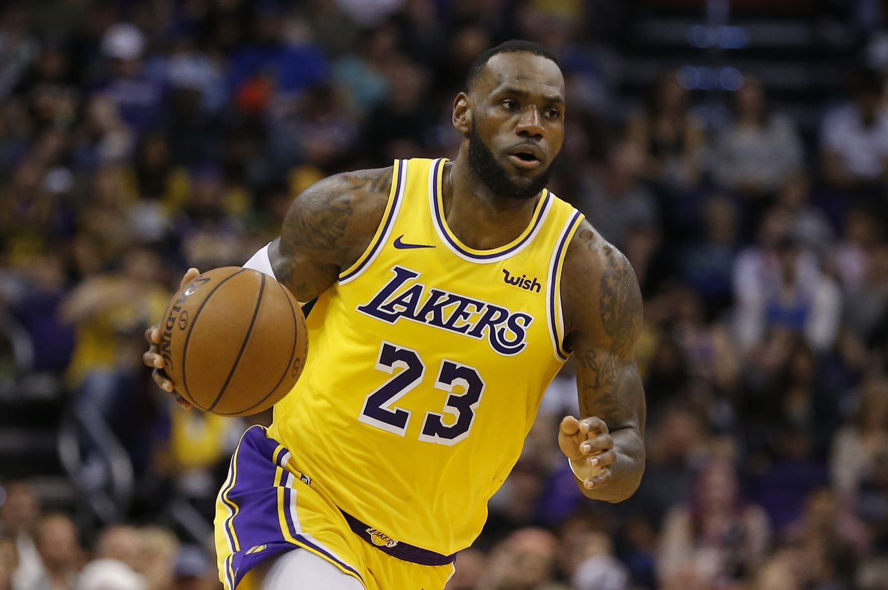
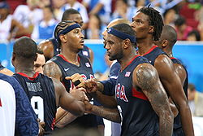

Моє захоплення
LeBron James

Оскільки я захоплююсь баскетболом, моїм улюбленим спортсменом є баскетболіст. Його ім'я ЛеБрон Джеймс. ЛеБрон Реймон Джеймс — американський професійний баскетболіст. З 2003 до 2010 року виступав за команду НБА «Клівленд Кавальєрз» під номером 23, з 2010 року по 2014 — «Маямі Хіт», з 2014 повернувся до команди «Клівленд Кавальєрз», виступає під 23 номером. На даний момент виступає в команді "Лос Анжелес Лейкерс". Позиція — легкий форвард. Зріст — 203 см. У сезоні 2011-12 Джеймс отримав титул MVP регулярної першості. Цей титул став вже третім у його кар'єрі — лише четверо гравців в історії НБА отримали більшу кількість нагород MVP. Під час матчу всіх зірок НБА 2012 Джеймс реалізував 6 триочкових кидків, що стало повторенням рекорду. За підсумками сезону 2011-12 «Гіт» здобули чемпіонство; у фінальній серії плей-оф «Гіт» виграли у «Оклахоми» з рахунком 4—1. У останній грі серії Джеймс набрав 26 очок, 11 підбирань та 13 результативних передач. Леброна було названо найціннішим гравцем фінальної серії.
Здобутки
- Найцінніший гравець сезону (2009, 2010)
- Учасник гри всіх зірок НБА (2005, 2006, 2007, 2008, 2009, 2010, 2011)
- Найрезультативніший гравець сезону (2008)
- Попадання в першу команду НБА за підсумками сезону (2006, 2008, 2009, 2010, 2011)
- попадання в другу команду НБА за підсумками сезону (2005, 2007)
- попадання в першу команду захисників сезону (2009, 2010, 2011)
- попаданя в першу команду новачків сезону (2004)
- MVP гри всіх зірок НБА (2006, 2008)
Рекорди "Наймолодший"
- Наймолодший гравець, що зробив трипл-дабл в грі НБА (19 січня 2005 року, 20 років і 20 днів).
- Наймолодший гравець, що набрав в грі НБА 30 чи більше очок (18 років і 334 дні).
- Наймолодший гравець, що набрав в грі НБА 40 чи більше очок (19 років і 88 днів).
- Наймолодший гравець, що набрав за сезон в середньому більше, ніж 30 очок за гру.
- Наймолодший гравець, що набрав за сезон не менше 2000 очок.
- Наймолодший гравець, що отримав титул MVP гри всіх зірок НБА (21 рік і 51 день).
- Наймолодший гравець, що набрав 1000 очок за кар'єру в НБА (9 лютого 2004 року, 19 років і 41 день).
- Наймолодший гравець, що набрав 5000 очок за кар'єру в НБА (21 січня 2006 року, 21 рік і 22 дні).
- Наймолодший гравець, що набрав 10000 очок за кар'єру в НБА (27 лютого 2008 року, 23 роки і 59 днів).
Національна збірна

Окрім клубу, виступає і за національну збірну США з баскетболу. У складі збірної — чемпіон Олімпійських ігор 2008 року, чемпіон Олімпійських ігор 2012 року, бронзовий призер Олімпійських ігор 2004 року, бронзовий призер чемпіонату світу 2006 року, чемпіон Америки 2007 року.
Здобувши титул чемпіона на Олімпіаді у Лондоні, Джеймс став одним з трьох гравців в історії, котрі протягом одного року здобули звання чемпіона НБА та чемпіона Літніх Олімпійських Ігор.
©buksa,
2019